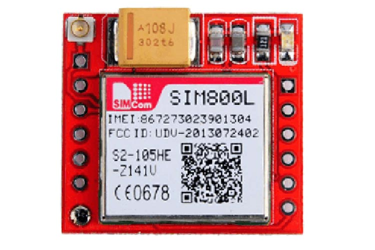

Arduino Based Seismic Event Notfying Tool is design to monitor the movement of the ground, below are the component that the researcher used.
SIM800L is a miniature cellular module which allows for GPRS transmission, sending and receiving SMS and making and receiving voice calls. Low cost and small footprint and quad band frequency support make this module perfect solution for any project that require long range connectivity.